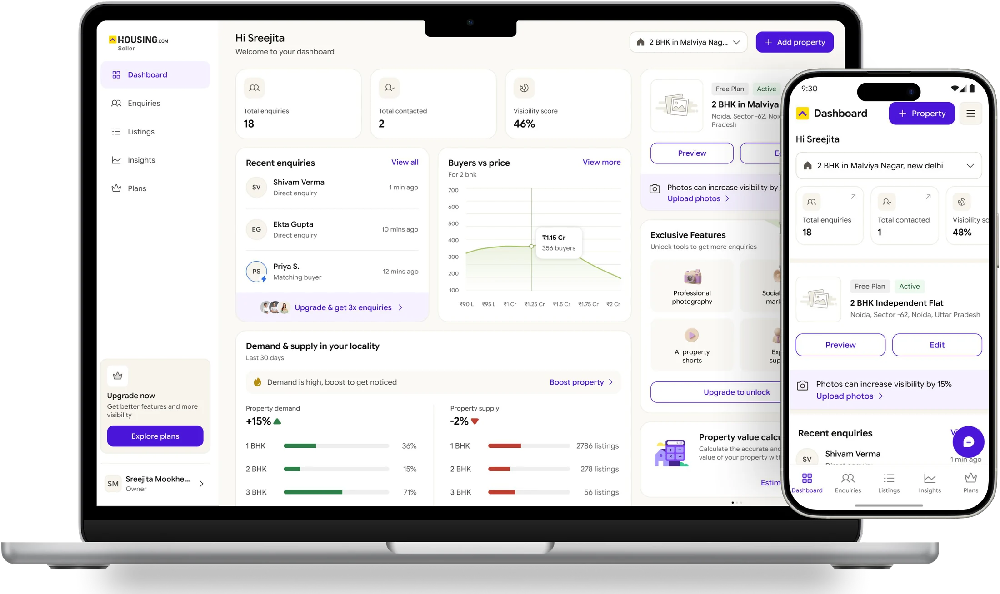
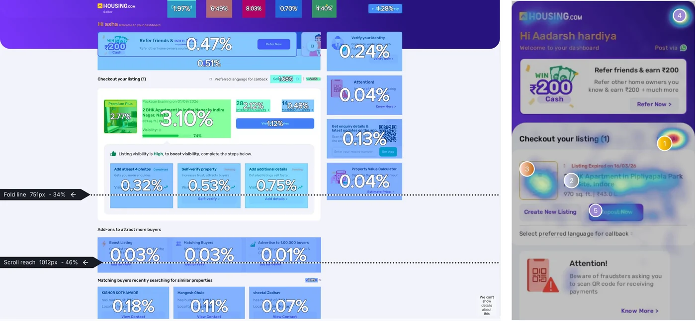
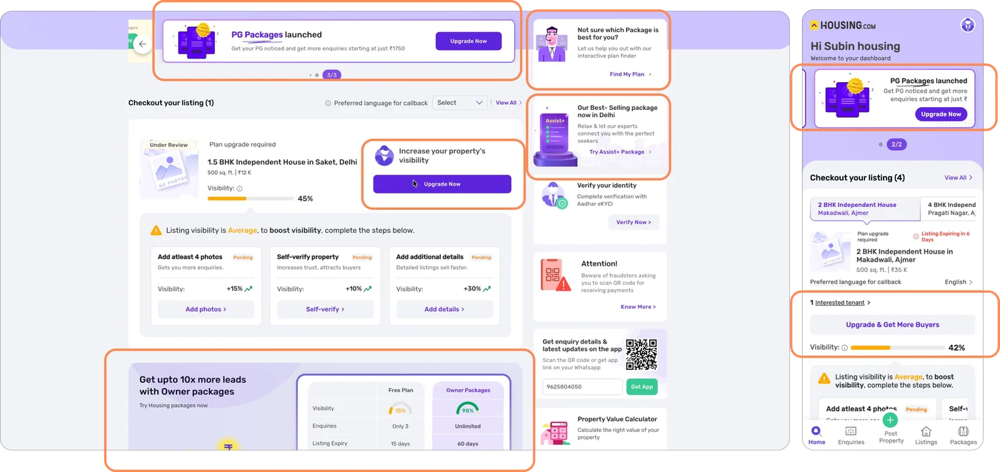
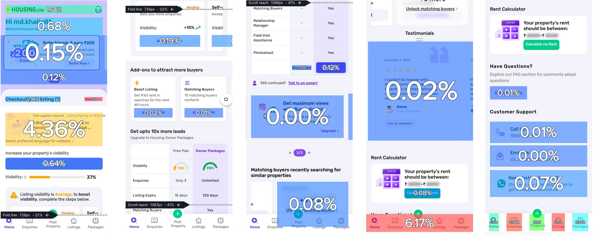
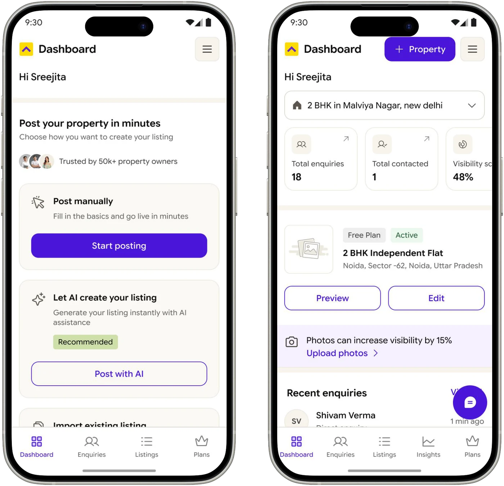
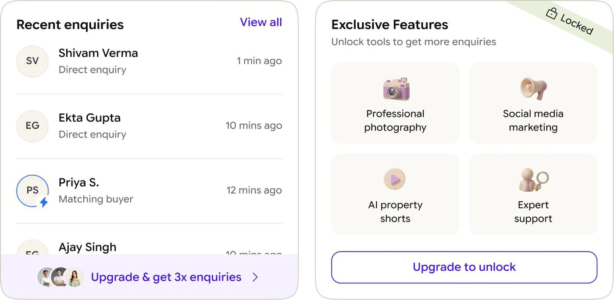
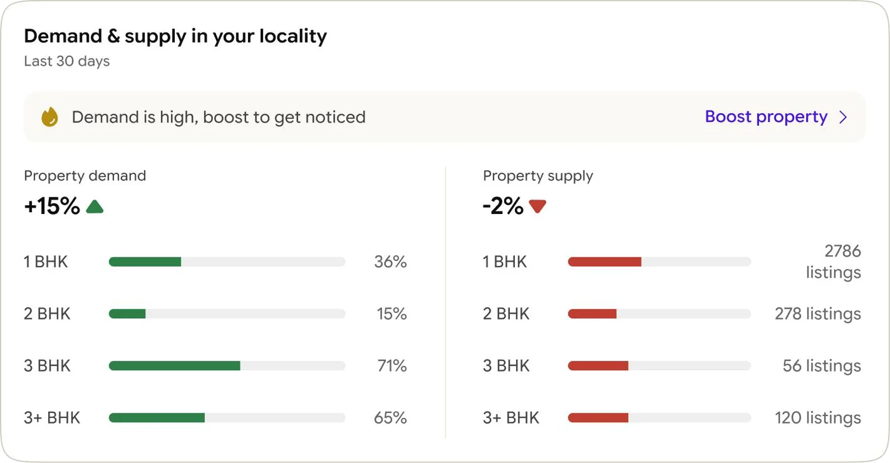
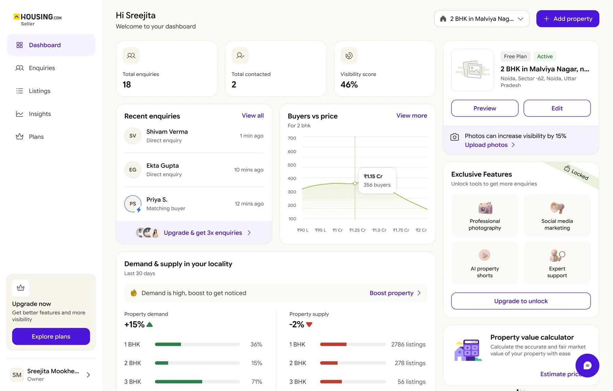
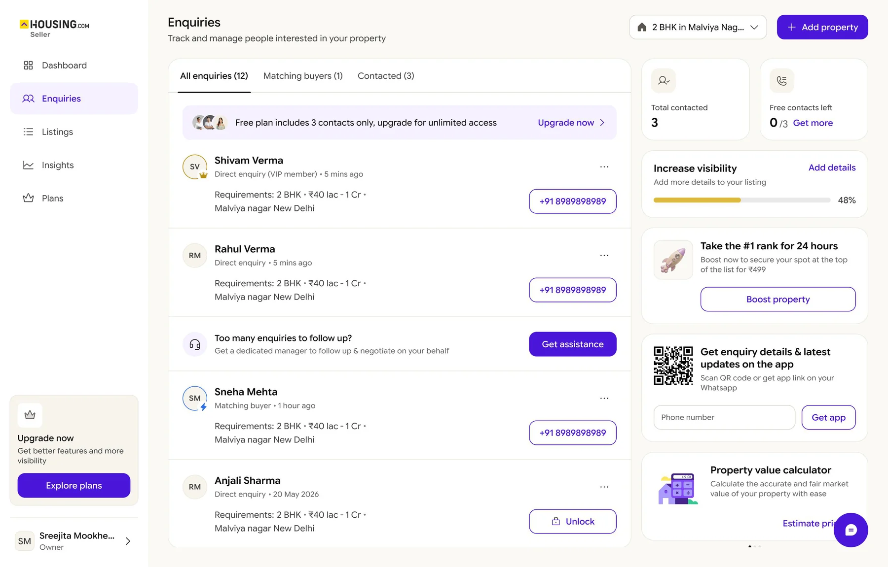

Housing Owner · Proptech · C2C
Designing for owners who aren’t paying yet!

Free Owner Dashboard Revamp — Phase 1
- Platforms
- Desktop · Mobile
- Why
- 95% of owners on the free plan
We looked at the experience before redesigning it
Audited the free owner journey across Dashboard, Enquiries, Plans and Insights, comparing paid vs free experiences across desktop and mobile.
Too much competing for attention
Ads, referrals, tools and essential actions all had the same visual weight.
The dashboard wasn’t built around the owner
Relevant information was buried while irrelevant modules took up valuable space.
Mobile felt like an afterthought
A desktop first experience was being served to 70%+ mobile users.
Upgrade had lost its meaning
Constant upgrade banners created banner blindness instead of showing owners what they were missing.


The dashboard was busy, but not useful enough

The problem wasn’t a lack of information. It was a lack of hierarchy, relevance and reason to come back.
Biggest Problem
Even with a lot of upgrade nudges, almost 95% of users are on free plan.
Hence, a more contextual redesign was needed.
Designed around the owner’s context
The experience adapts to what the owner has, where they are in their journey, and what they need next.
- Lifecycle based: Content adapts to where the owner is, from no property to an active listing.
- Relevant by default: Show what matters now, and remove modules that aren’t useful yet.



Make the value gap visible
Instead of relying on upgrade banners, the redesign makes useful owner data and premium value visible in the same experience.
- Value before monetisation: Let owners understand what the product can do before asking them to upgrade.
- One connected journey: Dashboard, Enquiries, Plans and Insights work together across desktop and mobile.
Building the foundation for what comes next
Phase 1 moves the owner dashboard from a one size fits all experience towards a more contextual product, where relevance comes first and monetisation has a clearer role.


Keep exploring